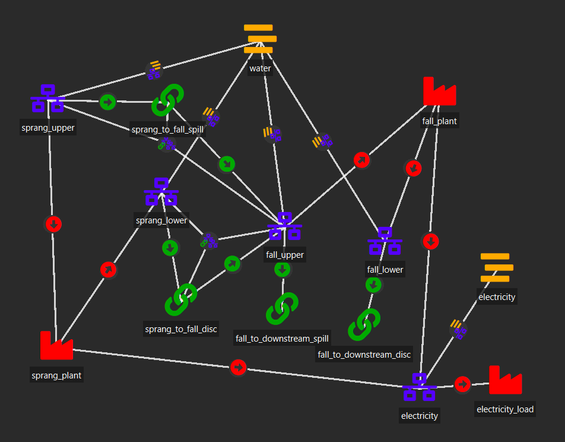
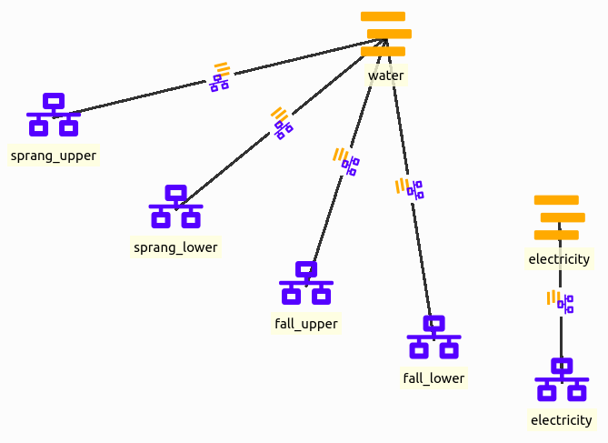
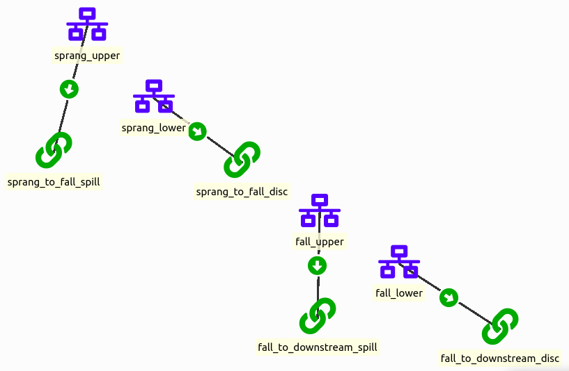
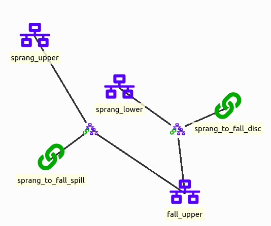
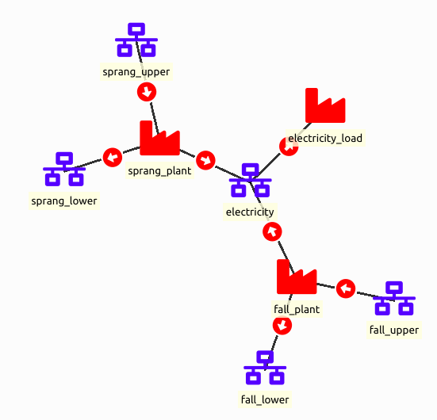

How to model hydropower coupling
This how-to aims at demonstrating how we can model a hydropower system in Spine (SpineOpt.jl and Spine-Toolbox) with different assumptions and goals. It starts off by setting up a simple model of system of two hydropower plants and gradually introduces additional features.
In each of the next sections, we perform incremental changes to the initial simple hydropower model. If you want to keep the database that you created, you can duplicate the database file (right-click on the input database and select Duplicate and duplicate files) and perform the changes in the new database. You need to configure the workflow accordingly in order to run the database you want (please check the Simple System tutorial for how to do that).
Many of the figures here use the old pre-v1.0.0 input data structure! Thus, parameter names might differ slightly from the latest ones, and unit__node__node has been replaced with unit_flow__unit_flow.
Context
The goal of the model is to capture the combined operation of two hydropower plants (Språnget and Fallet) that operate on the same river as shown in the picture bellow. Each power plant has its own reservoir and generates electricity by discharging water. The plants might need to spill water, i.e., release water from their reservoirs without generating electricity, for various reasons. The water discharged or spilled by the upstream power plant follows the river route and becomes available to the downstream power plant.
Setting up a basic hydropower model
The picture below shows how such a system of hydropower plants translates to a SpineOpt model. It looks quite daunting at first glance, but we'll break it down in smaller parts in the following subsections.

The model of this section is available as the example file hydro_power_coupling.json. You can import it into an empty input database to compare it with the steps below.
Starting point
- Create a workflow in Spine Toolbox with an input database, a Run SpineOpt tool and an output database, as on the Verify installation page.
- Double-click the input database to open it in the Spine DB editor.
- Download the SpineOpt database template with the Download raw file button at the top right of the file view.
- Download the basic SpineOpt model in the same way.
- In the Spine DB editor, select File > Import... and import the downloaded files, first
spineopt_template.jsonand thenbasic_model_template.json. The order matters: the basic model can only be imported once the classes of the SpineOpt template exist. The basic model contains the modelsimple, the temporal blockflat, the deterministic stochastic structure and the reportreport1. - Press Commit in the toolbar.
To enter a value, select its class in the Entity tree and fill in the entity byname, parameter name, alternative and value on the empty row of the Parameter value table. In the steps below, enter all values with the alternative Base. For values marked (drop-down), double-click the value cell and pick the value from the drop-down list. For values marked with a type, such as (Duration), right-click the value cell, select Edit... and choose that parameter type.
In the Parameter value table, the first row is a filter row. Enter new values on the empty row below it.
Model
Before we can create the hydropower system, we'll have to define a model, temporal structure and stochastic structure. The basic model in the templates will do. Though, we'll change the temporal resolution to 6h and the model start / end to for 1 day as an example.
As for the report, we are typically interested in the outputs: node_state, unit_flows and connection_flows.
- In the Entity tree, select the model class and add the following values on the empty row of the Parameter value table:
| group | class | entity byname | parameter name | alternative | value |
|---|---|---|---|---|---|
| model | simple | model_start | Base | 2000-01-01T00:00:00 (Date time) | |
| model | simple | model_end | Base | 2000-01-02T00:00:00 (Date time) |
- In the Entity tree, select the temporal_block class. The temporal block
flatalready has a resolution of1Dfrom the basic model. Right-click the value1D, select Edit... and change it to6h. - Right-click the report__output class, select Add entities..., add
report1 | node_state,report1 | unit_flowandreport1 | connection_flowand press OK. - Press Commit.
Nodes and grids
Nodes are at the center of a SpineOpt system, so let's start with that. There are other ways to model hydropower plants but here we represent each hydropower plant with 2 nodes, an 'upper' node to represent the water arriving at each plant and a 'lower' node to represent the water that is discharged and becomes available to the next plant. The general idea of splitting these in 2 nodes is to be able to simulate a time delay between the entrance and the exit (although in this tutorial we will not go in detail in this time delay).
Additionally we need a node for electricity.
Optionally, we can indicate that we are dealing with water flows and electricity production through grids. Note that grids are only indicative and are not strictly necessary. As in the picture below, we define a water and an electricity grid, and we connect these to the nodes with node__grid entities.
- Right-click the node class, select Add entities..., add
sprang_upper,sprang_lower,fall_upper,fall_lowerandelectricityand press OK. - Right-click the grid class and add
waterandelectricityin the same way. - Right-click the node__grid class and add
sprang_upper | water,sprang_lower | water,fall_upper | water,fall_lower | waterandelectricity | electricity.

Flows by means of connections
We'll ensure a correct flow between the nodes through connections. The flows include:
- local inflows in the reservoirs,
- internal flows in the hydropower plants (between the 'upper' and 'lower' nodes),
- the discharge flow that exits the Språnget hydropower plant at the lower node and flows to the upper node of the Fallet hydropower plant,
- the spill flow that bypasses the Språnget hydropower plant at the upper node and flows to the upper node of the Fallet hydropower plant,
- the discharge flow that exits the Fallet hydropower plant at the lower node and flows to the downstream river,
- the spill flow that bypasses the Fallet hydropower plant at the upper node and flows to the downstream river.
For the local inflows in the reservoirs, we actually do not need a connection. Instead, we can model this as a negative demand in one of the nodes of the power plant. Here we use an inflow of 112 for Språnget and 2 for Fallet:
| group | class | entity byname | parameter name | alternative | value |
|---|---|---|---|---|---|
| node | sprang_upper | demand | Base | -112.0 | |
| node | fall_upper | demand | Base | -2.0 |
The flow within each hydropower plant, i.e. the discharge flow between the 'upper' and the 'lower' node to generate the electricity, will also not be handled by the connection but by the units. In fact, anything that happens between the 'upper' and 'lower' nodes will be handled by the units.
For each of the remaining flows we create a connection entity. These connections need to be connected to nodes to function properly. To that end we'll use the connection__from_node. As the name suggests, we connect the connection to the node where the flow comes from, e.g. the 'lower' node of the Språnget hydropower plant to the connection between the 'lower' node of the Språnget and the 'upper' node of the Fallet hydropower plant.
The two connections that bring water to the Fallet hydropower plant also need a connection__to_node to the 'upper' node of the Fallet hydropower plant. Without it, the water from Språnget cannot reach Fallet, and SpineOpt stops with an error when building the model. The two connections to the downstream river only need the connection__from_node, as the water leaves the modelled system there.
As the flows are unbound by default, we also need to define the relation between the nodes and the flows with the connection__node__node entities. We need one between the 'upper' node of the Språnget hydropower plant and the 'upper' node of the Fallet hydropower plant for the corresponding spill connection. We also need one between the 'lower' node of the Språnget hydropower plant and the 'upper' node of the Fallet hydropower plant for the corresponding discharge connection. We bind the flows by setting the fix_ratio_out_in_connection_flow to 1.0, i.e. all the water that enters the connection also leaves it.
- In the Entity tree, select the node class and enter the inflows above.
- Right-click the connection class and add
sprang_to_fall_spill,sprang_to_fall_disc,fall_to_downstream_spillandfall_to_downstream_disc. - Right-click the connection__from_node class and add
sprang_to_fall_spill | sprang_upper,sprang_to_fall_disc | sprang_lower,fall_to_downstream_spill | fall_upperandfall_to_downstream_disc | fall_lower.

- Right-click the connection__to_node class and add
sprang_to_fall_spill | fall_upperandsprang_to_fall_disc | fall_upper. - Right-click the connection__node__node class and add
sprang_to_fall_spill | fall_upper | sprang_upperandsprang_to_fall_disc | fall_upper | sprang_lower. The first node is the one where the flow goes and the second the one where it comes from.

- In the Entity tree, select the connection__node__node class, enter the following values and press Commit:
| group | class | entity byname | parameter name | alternative | value |
|---|---|---|---|---|---|
| connection__node__node | sprang_to_fall_disc ǀ fall_upper ǀ sprang_lower | fix_ratio_out_in_connection_flow | Base | 1.0 | |
| connection__node__node | sprang_to_fall_spill ǀ fall_upper ǀ sprang_upper | fix_ratio_out_in_connection_flow | Base | 1.0 |
Energy conversion by means of units
Each hydropower plant uses a unit to convert the flow of water to electricity. These units are connected to the 'upper' and 'lower' nodes of the hydropower plants and the 'electricity' node. Water enters the 'upper' node, so the 'upper' node is connected to the unit through the node__to_unit. Water is then discharged, so the 'lower' node is connected to the unit through the unit__to_node. As the water discharges, electricity is produced, so the 'electricity' node is also connected to the unit through the unit__to_node.
Additionally, we add a unit to represent the income from selling the electricity production in the electricity market. The electricity price will be represented by a negative variable operation and maintenance (VOM) cost on the node__to_unit between the electricity node and the unit.
- Right-click the unit class and add
sprang_plant,fall_plantandelectricity_load. - Right-click the node__to_unit class and add
sprang_upper | sprang_plant,fall_upper | fall_plantandelectricity | electricity_load. - Right-click the unit__to_node class and add
sprang_plant | sprang_lower,sprang_plant | electricity,fall_plant | fall_lowerandfall_plant | electricity.

Again, by default the flows are unbound, so we have to bind them with unit_flow__unit_flow entities. The discharge flow from the 'upper' node flows in its entirety to the 'lower' node, so the flow_ratio_equality_coefficient between the 'lower' and the 'upper' node is 1.0. For the conversion from water flow to electricity, we need to take the conversion efficiency of the plant into account: the flow_ratio_equality_coefficient between the 'electricity' and the 'upper' node is 0.6 for the Språnget hydropower plant and 0.68 for the Fallet hydropower plant.
- Right-click the unit_flow__unit_flow class, select Add entities... and choose the unit, its output flow and its input flow, resulting in
sprang_plant | sprang_lower | sprang_upper | sprang_plant,sprang_plant | electricity | sprang_upper | sprang_plant,fall_plant | fall_lower | fall_upper | fall_plantandfall_plant | electricity | fall_upper | fall_plant. - Enter the following values and press Commit. Select the class of each row in the Entity tree before entering its values. The capacities limit the water flow into the units and the electricity production.
| group | class | entity byname | parameter name | alternative | value |
|---|---|---|---|---|---|
| node__to_unit | sprang_upper ǀ sprang_plant | capacity_per_unit | Base | 115.0 | |
| node__to_unit | fall_upper ǀ fall_plant | capacity_per_unit | Base | 165.0 | |
| node__to_unit | electricity ǀ electricity_load | vom_cost | Base | see below (Time series fixed resolution) | |
| unit__to_node | sprang_plant ǀ electricity | capacity_per_unit | Base | 69.0 | |
| unit__to_node | fall_plant ǀ electricity | capacity_per_unit | Base | 112.2 | |
| unit_flow__unit_flow | sprang_plant ǀ sprang_lower ǀ sprang_upper ǀ sprang_plant | flow_ratio_equality_coefficient | Base | 1.0 | |
| unit_flow__unit_flow | sprang_plant ǀ electricity ǀ sprang_upper ǀ sprang_plant | flow_ratio_equality_coefficient | Base | 0.6 | |
| unit_flow__unit_flow | fall_plant ǀ fall_lower ǀ fall_upper ǀ fall_plant | flow_ratio_equality_coefficient | Base | 1.0 | |
| unit_flow__unit_flow | fall_plant ǀ electricity ǀ fall_upper ǀ fall_plant | flow_ratio_equality_coefficient | Base | 0.68 |
For the electricity price, set the start time to 2000-01-01T00:00:00 and the resolution to 6h in the Edit value dialog, and enter the following values. Any (negative) values are fine, but these give the results shown at the end of this section.
| t | value |
|---|---|
| 2000-01-01T00:00:00 | -325.0 |
| 2000-01-01T06:00:00 | -250.0 |
| 2000-01-01T12:00:00 | -425.0 |
| 2000-01-01T18:00:00 | -400.0 |
Storage in nodes
To model the reservoirs of each hydropower plant, we leverage the node_state variable to represent storage capability. We only need to do this for one of the two nodes that we have used to model each plant and we choose the upper level node. To activate the storage functionality of a node, we set the value of the parameter storage_active as true. Then, we need to set the capacity of the reservoir by setting the storage_state_max parameter value.
Depending on the constraints of your hydropower plant, you can also fix the initial and final values of the reservoir by setting the parameter storage_state_fix to the respective values (use nan values for the time steps that you don't want to impose such constraints). When fixing the initial value of a reservoir value, the value should be fixed at ‘t-1’ instead of ’t0’. That is because the initial value of a reservoir means the previous value before the first hour. With the 6h resolution, the initial value is therefore set at 1999-12-31T18:00:00, one time step before the model_start, and the final value at 2000-01-01T18:00:00, the start of the last time step.
- In the Entity tree, select the node class and enter the following values:
| group | class | entity byname | parameter name | alternative | value |
|---|---|---|---|---|---|
| node | sprang_upper | storage_active | Base | true | |
| node | sprang_upper | storage_state_max | Base | 3600.0 | |
| node | sprang_upper | storage_state_fix | Base | see below (Time series variable resolution) | |
| node | fall_upper | storage_active | Base | true | |
| node | fall_upper | storage_state_max | Base | 3900.0 | |
| node | fall_upper | storage_state_fix | Base | see below (Time series variable resolution) |
- For storage_state_fix, enter the following rows in the Edit value dialog:
| t | sprang_upper | fall_upper |
|---|---|---|
| 1999-12-31T18:00:00 | 1000.0 | 1200.0 |
| 2000-01-01T00:00:00 | nan | nan |
| 2000-01-01T06:00:00 | nan | nan |
| 2000-01-01T12:00:00 | nan | nan |
| 2000-01-01T18:00:00 | 1722.27 | 768.0 |
- Press Commit.
Examining the results
At this point the model should be ready to run.
- Run the SpineOpt tool.
- Double-click the output database to open it in the Spine DB editor.
- Press the Index button in the toolbar to show the results in a pivot table.
- In the Entity tree, select
report__unit__node__direction__stochastic_scenariofor the unit_flow results. - Under alternative in the Frozen table, pick the latest run ("Run SpineOpt@..."). Each run is saved as its own alternative.
You should get the following unit_flow results. The from_node flows of the plants are the water they discharge, the to_node flows to electricity their electricity production, and the flow from electricity to electricity_load the total electricity production.
| report | unit | node | direction | stochastic_scenario | index | unit_flow |
|---|---|---|---|---|---|---|
| report1 | electricity_load | electricity | from_node | realization | 2000-01-01T00:00:00 | 111.36 |
| report1 | electricity_load | electricity | from_node | realization | 2000-01-01T06:00:00 | 0 |
| report1 | electricity_load | electricity | from_node | realization | 2000-01-01T12:00:00 | 181.2 |
| report1 | electricity_load | electricity | from_node | realization | 2000-01-01T18:00:00 | 181.2 |
| report1 | fall_plant | electricity | to_node | realization | 2000-01-01T00:00:00 | 52.78 |
| report1 | fall_plant | electricity | to_node | realization | 2000-01-01T06:00:00 | 0 |
| report1 | fall_plant | electricity | to_node | realization | 2000-01-01T12:00:00 | 112.2 |
| report1 | fall_plant | electricity | to_node | realization | 2000-01-01T18:00:00 | 112.2 |
| report1 | fall_plant | fall_lower | to_node | realization | 2000-01-01T00:00:00 | 77.62 |
| report1 | fall_plant | fall_lower | to_node | realization | 2000-01-01T06:00:00 | 0 |
| report1 | fall_plant | fall_lower | to_node | realization | 2000-01-01T12:00:00 | 165 |
| report1 | fall_plant | fall_lower | to_node | realization | 2000-01-01T18:00:00 | 165 |
| report1 | fall_plant | fall_upper | from_node | realization | 2000-01-01T00:00:00 | 77.62 |
| report1 | fall_plant | fall_upper | from_node | realization | 2000-01-01T06:00:00 | 0 |
| report1 | fall_plant | fall_upper | from_node | realization | 2000-01-01T12:00:00 | 165 |
| report1 | fall_plant | fall_upper | from_node | realization | 2000-01-01T18:00:00 | 165 |
| report1 | sprang_plant | electricity | to_node | realization | 2000-01-01T00:00:00 | 58.57 |
| report1 | sprang_plant | electricity | to_node | realization | 2000-01-01T06:00:00 | 0 |
| report1 | sprang_plant | electricity | to_node | realization | 2000-01-01T12:00:00 | 69 |
| report1 | sprang_plant | electricity | to_node | realization | 2000-01-01T18:00:00 | 69 |
| report1 | sprang_plant | sprang_lower | to_node | realization | 2000-01-01T00:00:00 | 97.62 |
| report1 | sprang_plant | sprang_lower | to_node | realization | 2000-01-01T06:00:00 | 0 |
| report1 | sprang_plant | sprang_lower | to_node | realization | 2000-01-01T12:00:00 | 115 |
| report1 | sprang_plant | sprang_lower | to_node | realization | 2000-01-01T18:00:00 | 115 |
| report1 | sprang_plant | sprang_upper | from_node | realization | 2000-01-01T00:00:00 | 97.62 |
| report1 | sprang_plant | sprang_upper | from_node | realization | 2000-01-01T06:00:00 | 0 |
| report1 | sprang_plant | sprang_upper | from_node | realization | 2000-01-01T12:00:00 | 115 |
| report1 | sprang_plant | sprang_upper | from_node | realization | 2000-01-01T18:00:00 | 115 |
For the reservoir levels, select report__node__stochastic_scenario in the Entity tree. You should get the following node_state results:
| report | node | stochastic_scenario | index | node_state |
|---|---|---|---|---|
| report1 | fall_upper | realization | 2000-01-01T00:00:00 | 1332 |
| report1 | fall_upper | realization | 2000-01-01T06:00:00 | 1344 |
| report1 | fall_upper | realization | 2000-01-01T12:00:00 | 1056 |
| report1 | fall_upper | realization | 2000-01-01T18:00:00 | 768 |
| report1 | sprang_upper | realization | 2000-01-01T00:00:00 | 1086.27 |
| report1 | sprang_upper | realization | 2000-01-01T06:00:00 | 1758.27 |
| report1 | sprang_upper | realization | 2000-01-01T12:00:00 | 1740.27 |
| report1 | sprang_upper | realization | 2000-01-01T18:00:00 | 1722.27 |
The plants produce at full capacity in the two most expensive time steps (prices 425 and 400) and save water in the cheapest one (price 250). The rest of the water is used in the first time step so that the reservoirs reach their fixed final values. The connection_flow results show the same water flows between the plants and to the downstream river.
Maximisation of Stored Water
Instead of fixing the water content of the reservoirs at the end of the planning period, we can consider that the remaining water in the reservoirs has a value and then maximize the value along with the revenues for producing electricity within the planning horizon. This objective term is often called the Value of stored water and we can approximate it by assuming that this water will be used to generate electricity in the future that would be sold at a forecasted price. The water stored in the upstream hydropower plant will become also available to the downstream plant and this should be taken into account.
Changes to the basic model
Start from the basic model of the previous section. If you want to keep it, duplicate the database first, as explained at the top of this page. If you don't have the basic model anymore, import hydro_power_coupling.json into an empty input database.
- Right-click the node class and add
stored_water. This node will accumulate the water stored in the reservoirs at the end of the planning horizon. - Right-click the node__grid class and add
stored_water | water. - Right-click the unit class and add
sprang_stored_water,fall_stored_waterandvalue_stored_water. The first two transfer the water left in the reservoirs to the stored_water node, and the third one is a sink that introduces the value of stored water in the objective function. - Right-click the node__to_unit class and add
stored_water | value_stored_water,sprang_upper | sprang_stored_waterandfall_upper | fall_stored_water. - Right-click the unit__to_node class and add
sprang_stored_water | stored_waterandfall_stored_water | stored_water. - Right-click the unit_flow__unit_flow class and add
sprang_stored_water | stored_water | sprang_upper | sprang_stored_waterandfall_stored_water | stored_water | fall_upper | fall_stored_water. - Extend the planning horizon of the model by one time step: in the Entity tree, select the model class and change the value of model_end to
2000-01-02T06:00:00. - Remove the final values of the reservoirs: in the Entity tree, select the node class. In the Parameter value table, right-click the value of storage_state_fix of sprang_upper, select Edit..., select the last row (
2000-01-01T18:00:00), right-click, select Remove rows and press OK. Do the same for fall_upper. The initial values stay. - In the Entity tree, select the node__to_unit class. Right-click the value of vom_cost of electricity ǀ electricity_load, select Edit... and add a fifth value, 0.0, for the extra time step. The price is set to zero to ensure no electricity is sold during this time step.
- Enter the following values and press Commit. Select the class of each row in the Entity tree before entering its values:
| group | class | entity byname | parameter name | alternative | value |
|---|---|---|---|---|---|
| node__to_unit | stored_water ǀ value_stored_water | vom_cost | Base | see below (Time series fixed resolution) | |
| unit_flow__unit_flow | sprang_stored_water ǀ stored_water ǀ sprang_upper ǀ sprang_stored_water | flow_ratio_equality_coefficient | Base | 1.28 | |
| unit_flow__unit_flow | fall_stored_water ǀ stored_water ǀ fall_upper ǀ fall_stored_water | flow_ratio_equality_coefficient | Base | 0.68 |
For the vom_cost of value_stored_water, set the start time to 2000-01-01T00:00:00 and the resolution to 6h. We impose a zero cost for the original planning horizon and use an assumed future electricity price for the extra time step at the end of the horizon:
| t | value |
|---|---|
| 2000-01-01T00:00:00 | 0.0 |
| 2000-01-01T06:00:00 | 0.0 |
| 2000-01-01T12:00:00 | 0.0 |
| 2000-01-01T18:00:00 | 0.0 |
| 2000-01-02T00:00:00 | -400.0 |
The efficiency of fall_stored_water is the same as that of fall_plant, as the water in Fallet's reservoir will be used to produce electricity by the Fallet plant only. On the other hand, the water from Språnget's reservoir will be used both by the Språnget and the Fallet plant, therefore we use the sum of the two efficiencies (0.6 + 0.68 = 1.28) for sprang_stored_water.
Examining the results
The model of this section is available as the example file hydro_power_coupling_stored_water.json. Run the model and open the results as in the basic model. You should get the following unit_flow results. To show only these rows, select only electricity_load, fall_plant and sprang_plant in the unit column header and only from_node in the direction column header:
| report | unit | node | direction | stochastic_scenario | index | unit_flow |
|---|---|---|---|---|---|---|
| report1 | electricity_load | electricity | from_node | realization | 2000-01-01T00:00:00 | 0 |
| report1 | electricity_load | electricity | from_node | realization | 2000-01-01T06:00:00 | 0 |
| report1 | electricity_load | electricity | from_node | realization | 2000-01-01T12:00:00 | 181.2 |
| report1 | electricity_load | electricity | from_node | realization | 2000-01-01T18:00:00 | 107.44 |
| report1 | electricity_load | electricity | from_node | realization | 2000-01-02T00:00:00 | 0 |
| report1 | fall_plant | fall_upper | from_node | realization | 2000-01-01T00:00:00 | 0 |
| report1 | fall_plant | fall_upper | from_node | realization | 2000-01-01T06:00:00 | 0 |
| report1 | fall_plant | fall_upper | from_node | realization | 2000-01-01T12:00:00 | 165 |
| report1 | fall_plant | fall_upper | from_node | realization | 2000-01-01T18:00:00 | 158 |
| report1 | fall_plant | fall_upper | from_node | realization | 2000-01-02T00:00:00 | 0 |
| report1 | sprang_plant | sprang_upper | from_node | realization | 2000-01-01T00:00:00 | 0 |
| report1 | sprang_plant | sprang_upper | from_node | realization | 2000-01-01T06:00:00 | 0 |
| report1 | sprang_plant | sprang_upper | from_node | realization | 2000-01-01T12:00:00 | 115 |
| report1 | sprang_plant | sprang_upper | from_node | realization | 2000-01-01T18:00:00 | 0 |
| report1 | sprang_plant | sprang_upper | from_node | realization | 2000-01-02T00:00:00 | 0 |
And the following node_state results:
| report | node | stochastic_scenario | index | node_state |
|---|---|---|---|---|
| report1 | fall_upper | realization | 2000-01-01T00:00:00 | 1212 |
| report1 | fall_upper | realization | 2000-01-01T06:00:00 | 1224 |
| report1 | fall_upper | realization | 2000-01-01T12:00:00 | 936 |
| report1 | fall_upper | realization | 2000-01-01T18:00:00 | 0 |
| report1 | fall_upper | realization | 2000-01-02T00:00:00 | 0 |
| report1 | sprang_upper | realization | 2000-01-01T00:00:00 | 1672 |
| report1 | sprang_upper | realization | 2000-01-01T06:00:00 | 2344 |
| report1 | sprang_upper | realization | 2000-01-01T12:00:00 | 2326 |
| report1 | sprang_upper | realization | 2000-01-01T18:00:00 | 2998 |
| report1 | sprang_upper | realization | 2000-01-02T00:00:00 | 0 |
The plants no longer produce in the first two time steps, as the stored water is worth more than the electricity sold at the prices 325 and 250. For example, water stored in Språnget is valued at 1.28 × 400 = 512, as it can later be used by both plants. In the extra time step (2000-01-02T00:00:00), all the remaining water is moved to the stored_water node and the reservoirs are emptied.
At 18:00, the electricity price (400) is equal to the assumed future electricity price, so selling and storing the water give the same value. Therefore, your results for 18:00 and the extra time step may differ from the ones above, while the objective value stays the same. The results from 00:00 to 12:00 should be the same.
As an exercise, try to retrieve the value of stored water as it is calculated by the model.
Spillage Constraints - Minimisation of Spilt Water
It might be the case that we need to impose certain limits to the amount of water that is spilt on each time step of the planning horizon, e.g., for environmental reasons, there can be a minimum and a maximum spillage level. At the same time, to avoid wasting water that could be used for producing electricity, we could explicitly impose the spillage minimisation to be added in the objective function.
Changes to the basic model
Start from the basic model, not from the stored water model. If you want to keep it, duplicate the database first, as explained at the top of this page. If you don't have the basic model anymore, import hydro_power_coupling.json into an empty input database. Here we replace the spill connection of Språnget with a unit, sprang_spill, which can limit and penalise the spilt water.
- In the Entity tree, expand the connection class, right-click
sprang_to_fall_spilland select Remove.... Its connection__from_node, connection__to_node and connection__node__node entities are removed with it. - Right-click the unit class and add
sprang_spill. - Right-click the node__to_unit class and add
sprang_upper | sprang_spill. - Right-click the unit__to_node class and add
sprang_spill | fall_upper. - Right-click the unit_flow__unit_flow class and add
sprang_spill | fall_upper | sprang_upper | sprang_spill. - Enter the following values and press Commit. Select the class of each row in the Entity tree before entering its values:
| group | class | entity byname | parameter name | alternative | value |
|---|---|---|---|---|---|
| node__to_unit | sprang_upper ǀ sprang_spill | capacity_per_unit | Base | 1000.0 | |
| node__to_unit | sprang_upper ǀ sprang_spill | minimum_operating_point | Base | 0.001 | |
| node__to_unit | sprang_upper ǀ sprang_spill | vom_cost | Base | 1000.0 | |
| unit | sprang_spill | online_variable_type | Base | none (drop-down) | |
| unit_flow__unit_flow | sprang_spill ǀ fall_upper ǀ sprang_upper ǀ sprang_spill | flow_ratio_equality_coefficient | Base | 1.0 |
What the values do:
- capacity_per_unit 1000: the maximum spillage.
- minimum_operating_point 0.001: the minimum spillage as a fraction of the capacity, i.e. 0.001 × 1000 = 1.
- vom_cost 1000: a penalty for the spilt water, so that water is not spilt unnecessarily.
- online_variable_type
none: the minimum operating point applies only when the unit is online. With the default typelinear, the model can avoid the minimum spillage by taking the unit offline. Withnone, the unit is always online. - flow_ratio_equality_coefficient 1: all the spilt water reaches Fallet.
Examining the results
The model of this section is available as the example file hydro_power_coupling_spillage.json. Run the model and open the results as in the basic model. You should get the following unit_flow results. To show only these rows, select only electricity_load, sprang_plant and sprang_spill in the unit column header. The results of fall_plant are the same as in the basic model.
| report | unit | node | direction | stochastic_scenario | index | unit_flow |
|---|---|---|---|---|---|---|
| report1 | electricity_load | electricity | from_node | realization | 2000-01-01T00:00:00 | 108.96 |
| report1 | electricity_load | electricity | from_node | realization | 2000-01-01T06:00:00 | 0 |
| report1 | electricity_load | electricity | from_node | realization | 2000-01-01T12:00:00 | 181.2 |
| report1 | electricity_load | electricity | from_node | realization | 2000-01-01T18:00:00 | 181.2 |
| report1 | sprang_plant | electricity | to_node | realization | 2000-01-01T00:00:00 | 56.17 |
| report1 | sprang_plant | electricity | to_node | realization | 2000-01-01T06:00:00 | 0 |
| report1 | sprang_plant | electricity | to_node | realization | 2000-01-01T12:00:00 | 69 |
| report1 | sprang_plant | electricity | to_node | realization | 2000-01-01T18:00:00 | 69 |
| report1 | sprang_plant | sprang_lower | to_node | realization | 2000-01-01T00:00:00 | 93.62 |
| report1 | sprang_plant | sprang_lower | to_node | realization | 2000-01-01T06:00:00 | 0 |
| report1 | sprang_plant | sprang_lower | to_node | realization | 2000-01-01T12:00:00 | 115 |
| report1 | sprang_plant | sprang_lower | to_node | realization | 2000-01-01T18:00:00 | 115 |
| report1 | sprang_plant | sprang_upper | from_node | realization | 2000-01-01T00:00:00 | 93.62 |
| report1 | sprang_plant | sprang_upper | from_node | realization | 2000-01-01T06:00:00 | 0 |
| report1 | sprang_plant | sprang_upper | from_node | realization | 2000-01-01T12:00:00 | 115 |
| report1 | sprang_plant | sprang_upper | from_node | realization | 2000-01-01T18:00:00 | 115 |
| report1 | sprang_spill | fall_upper | to_node | realization | 2000-01-01T00:00:00 | 1 |
| report1 | sprang_spill | fall_upper | to_node | realization | 2000-01-01T06:00:00 | 1 |
| report1 | sprang_spill | fall_upper | to_node | realization | 2000-01-01T12:00:00 | 1 |
| report1 | sprang_spill | fall_upper | to_node | realization | 2000-01-01T18:00:00 | 1 |
| report1 | sprang_spill | sprang_upper | from_node | realization | 2000-01-01T00:00:00 | 1 |
| report1 | sprang_spill | sprang_upper | from_node | realization | 2000-01-01T06:00:00 | 1 |
| report1 | sprang_spill | sprang_upper | from_node | realization | 2000-01-01T12:00:00 | 1 |
| report1 | sprang_spill | sprang_upper | from_node | realization | 2000-01-01T18:00:00 | 1 |
And the following node_state results:
| report | node | stochastic_scenario | index | node_state |
|---|---|---|---|---|
| report1 | fall_upper | realization | 2000-01-01T00:00:00 | 1314 |
| report1 | fall_upper | realization | 2000-01-01T06:00:00 | 1332 |
| report1 | fall_upper | realization | 2000-01-01T12:00:00 | 1050 |
| report1 | fall_upper | realization | 2000-01-01T18:00:00 | 768 |
| report1 | sprang_upper | realization | 2000-01-01T00:00:00 | 1104.27 |
| report1 | sprang_upper | realization | 2000-01-01T06:00:00 | 1770.27 |
| report1 | sprang_upper | realization | 2000-01-01T12:00:00 | 1746.27 |
| report1 | sprang_upper | realization | 2000-01-01T18:00:00 | 1722.27 |
Due to the spillage penalty, the spillage stays at its minimum of 1. Compared with the basic model, Språnget discharges less in the first time step (93.62 instead of 97.62), as the spilt water also reaches Fallet and the reservoirs still have to reach the same final values.
As an exercise, you can perform this process for the Fallet plant (you would also need to add another water node, downstream of Fallet).
Follow Contracted Load Curve
It is often the case that a system of hydropower plants should follow a given production profile. To model this in the given system, all we have to do is set a demand in the form of a timeseries to the electricity node.